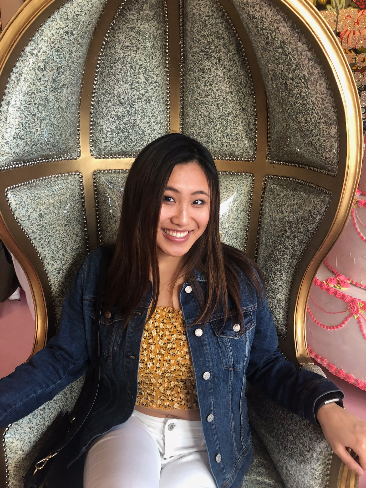

Welcome To My Portfolio

This January, I had the opportunity to attend the PLEN: Women in STEM Policy seminar in Washington D.C. PLEN brought together a network of motivated and talented women, from recent grads like myself to executive professionals who have already found their success within the industry. Through discussions, panels, and site visits, I was introduced to an incredible degree of career possibilities within STEM I didn't even know existed. Listening to the experiences of these women, each encountering a different path with different obstacles, I felt inspired. The most salient message their stories taught me was that your career path, much like your life, cannot be completely planned for. There is no defined path so rather than fixating on what you think your supposed to do, take a risk and focus on your true interests.
At PLEN, I was especially fascinated to learn about work within both software design and engineering. In the days following the conference, I turned to my resources on google to learn the language of HTML. I began creating this portfolio website to explore my interest in code design. Four days later, I've completed my final touches and am proud to share my work with you. I know I have a long way to go, but this is just the beginninng. I cannot wait to see what directions my life takes me in. I am unsure of where I hope to end with my career, but I am excited to explore my options, keeping in mind that the journey is just as important as the final destination.
Meet Kayleigh
Family
College

Dance Team
Certified Personal Trainer
Bristol Meyers Squibb
Tulane School of Medicine
I Love:
Going out to eat
Going out to the movies or theater
Dessert, It's my favorite meal!
Meeting new people and creating genuine relationships
Reading autobiographies
"Dancing With The Stars"
Coding
Goals
Let's connect!

Questions? Comments?
Feel free to reach out
Personal Email